The complete Mutable Dreams 2.1 instrument – six tracks of generative music, 271 Biomes, long dreams and a radio station – played with sixteen pads, recorded as gestures and grown into a night garden. And because the VIBE has audio inputs, the garden listens: sing into it, and it answers.
This manual explains how to install and play the firmware, every one of its 50 pages, and many ideas for what to do with it. Version 0.32 checked in local SDK tests. The preceding 0.31 was also tested in VIBE FM VST 0.8.0 (VST3 / AU), with host caveats. This visual update still needs a new real-DAW pass; VIBE FM Mk1 hardware and CLAP testing are pending.
Names of keys and pages are printed as on the instrument: PLAY, SHIFT, F1. “Pad 9” means the ninth of the sixteen pads (pads are numbered 1–16, left to right, top to bottom). “E1–E4” are the encoders 1–4 under the display, “A” and “B” the two big encoders.
Your familiar instrument, with more life in its light and movement. The sound engine, parameter IDs, saved gardens and playing controls stay as in the reviewed 0.31.
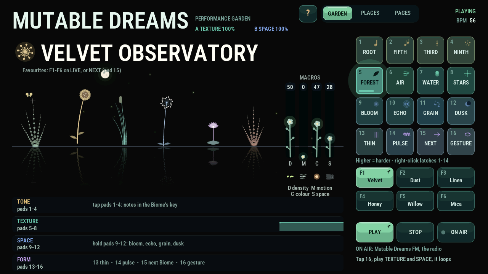
| Group | Background |
|---|---|
| SOUND | Fireflies; their number follows DENSITY. |
| ENV | Three slow breaths of warm light rising from the ground. |
| LFO | Fine wind streaks travelling on different waves. |
| HARMONY | A constellation whose stars react to the track peaks. |
| FX | Drifting mist and water rings. |
| SEQ | Sixteen lights, with the currently playing step highlighted. |
| DREAM | Aurora ribbons and occasional falling stars. |
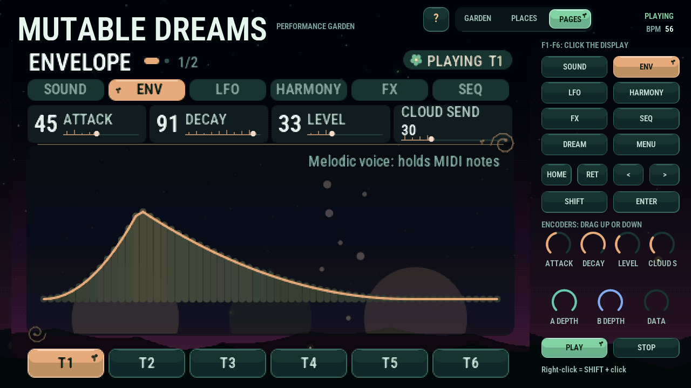
Mutable Dreams is an instrument that plays by itself – and that you play with. It grows music from a Biome: a little world of six tracks, a key, a tempo, a sound for each track and rules for how the music unfolds. You shape the world while it plays: with four macros, with sixteen pads, with gestures your hands leave behind, and with your voice.
“Mutable” because nothing stays the same for long; “Dreams” because the music drifts like one; “Performance Garden” because this version is about playing it live, with a garden that grows out of the sound.
| Where | How |
|---|---|
| VIBE FM VST (DAW) | Insert VIBE FM VST on an instrument track. Drop mutable-dreams-garden.zip onto the plugin window. It installs and starts. For the stems, give the plugin eight outputs (chapter 14). |
| Web Player | Choose “Mutable Dreams · Performance Garden” from the firmware list, or load the .wasm from the zip, then click Power on. For REC takes, choose a folder under Media. For the inputs, allow the microphone when the browser asks. |
| VIBE FM Mk1 | Hardware testing is pending. Follow the current VIBE documentation when a device is available; this release makes no hardware installation or performance claim. |
At the very first start, FIRST STEPS opens by itself: eight short cards, each moves on as soon as you have done what it says – press PLAY, hold BLOOM, turn a macro, tap NEXT, loop a gesture, open the MENU, switch the input on. On the stage the pad to press glows; in the MENU the current instruction stands in gold at the bottom. HOME ends the tour at any time. Start it again with F1 TOUR on the SYSTEM page, the ? on the stage or the ? in the Dream Console. The tour is remembered: a known garden starts without it.
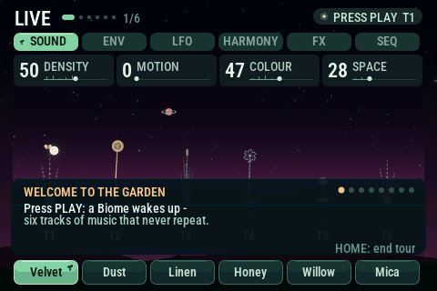
The display always shows the whole instrument. The stage and the Dream Console are bigger faces of the same controls – nothing lives only there.
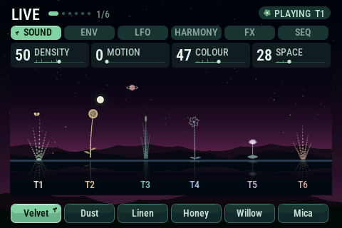
| Part | What it shows |
|---|---|
| Header | The page name, dots for the pages of its group with “n/m”, and on the right the status: PLAYING / STOPPED with the selected track, ON AIR, a REC timer, or a short message after an action. |
| Tabs | The six groups SOUND · ENV · LFO · HARMONY · FX · SEQ; the group of the open page is filled with its colour. DREAM pages (radio, journeys, banks, MIDI, CV) show a line in their colour under the tabs. |
| Value cells | The four values that encoders E1–E4 change on this page, with a meter for continuous values. |
| Picture | What the page does, drawn: the garden on LIVE, an envelope on ENVELOPE, the echo cave on SPACE, the step grid on SEQ GRID … |
| Caption | One line with the page's hint or the current state. |
| Soft keys | What F1–F6 do here. Filled = active. A key with a slash mark is assigned but unavailable right now; an empty place has no job on this page. |
| Control | What it does |
|---|---|
| Keys (25) | Play the selected track in the Biome's key. MIDI notes and the DAW's notes do the same. OCT − / OCT + move the keyboard. |
| Pads 1–16 | The performance (chapter 5). SHIFT + pad latches pads 1–14. |
| E1–E4 | The four values at the top of the open page. |
| A · B | Texture depth and space depth: how strongly pads 5–8 and 9–12 act – on every page. |
| DATA + ENTER | FOCUS: walk to any control on the display with DATA and change it; ENTER presses it. In the MENU, DATA chooses a page. |
| F1–F6 | The soft keys. On most sound pages they select tracks T1–T6. They act when you let go; held, they explain themselves. |
| SOUND … SEQ | The six keys right of ENTER open their group; pressing the same key again moves to the group's next page. Each group remembers its last page. |
| MENU · ◀ ▶ | MENU: all 50 pages in a directory (two banks of 36). ◀ ▶: previous / next page. |
| HOME | Tapped: the help for the open page (two pages, ◀ ▶ turn them). Held one second, or SHIFT + HOME: the VIBE's firmware library. |
| RETURN | Back to LIVE. SHIFT + RETURN: undo the last variation or sequencer tool. |
| PLAY · STOP · REC | Transport. STOP also releases the pads and ends a radio broadcast. REC records an audio take (chapter 12). |
| Pedal | Footswitch = pad 16 (gesture). Expression pedal = space depth. |
The six coloured keys are the fastest way: SOUND (Biome, voices, mix) · ENV (envelope, filter) · LFO (modulation, links, drift) · HARMONY (key, chords, bass) · FX (pads, effects, the inputs) · SEQ (rhythm, sequencer, kit).
MENU lists every page. Turn E1 or DATA, press ENTER (or F1). MENU or RETURN closes it. While the menu is open, nothing acts blind on the page below.
A short picture of the engine helps to know which knob to reach for.
A Biome sets everything at once: key and scale, tempo, which of the 24 sound engines each of the six tracks uses, their levels and effects, the rhythm of each track, chords, bass, kit, and the seed of its randomness. 271 Biomes in 19 families come with the firmware.
Each track is a voice with an engine (Plaits FM, Rings modal, Elements strike, velvet keys, spectral bloom, felt mallet …), an envelope and filter, modulation (Marbles, Tides, Warps, two LFOs) and its own rhythm. A Euclidean rhythm, a step sequence or a generator decides when it plays; the harmony decides which notes.
Every track sends to the cloud (a granular tape), the echo and the room. The FX return brings them back. The texture and space pads play these effects directly.
| DENSITY | How many notes: from sparse to busy. |
| MOTION | How much moves: modulation and variation. |
| COLOUR | Brightness and timbre. |
| SPACE | Distance: effects, air and tail. |
The macros sit on LIVE (E1–E4), on the stage as sliders, in the Dream Console as knobs and in the DAW as parameters. In the garden they are the weather: DENSITY brings fireflies, MOTION wind, COLOUR the glow, SPACE mist on the pond.
SHIFT + pad 15 seeds the same Biome anew – different melodies and rhythms in the same world. SHIFT + RETURN takes it back.
Everything you change is saved with the DAW project or on the VIBE; sixteen bank slots keep whole projects. Loading a Biome again restores its original state.
Four rows, four ways to play. All pads are velocity-sensitive, combine freely and fade out with the pad tail when you let go.
They play notes of the Biome's key on one track: by default the selected one; choose another with E4 on the PADS page (“Tone pads play”). Three tone modes (SHIFT + E1 on PADS): Note – one note per pad; Chord – a chord of the scale on the pad's degree; Arpeggio – that chord in time with the clock. Hold several tone pads for a richer chord.
Four textures of nature – forest, air and water as sounds of their own, stardust as sparks in the Biome's key – and four ways to open the space. How hard you press is how deep they go; encoders A and B scale the whole row (texture depth, space depth) on every page. The gesture recorder records exactly these eight pads.
| Latch | SHIFT + pad holds pads 1–14 on (a white dot shows it); the same again lets go. On the stage and in the Dream Console: right-click or shift-click. Both hands stay free. |
| Pad tail | How long a pad fades after you let go: E1 on PADS, 0.05–6 s. |
| Depth | Encoders A / B, the expression pedal (space) or the DAW parameters “Texture depth” and “Space depth”. |
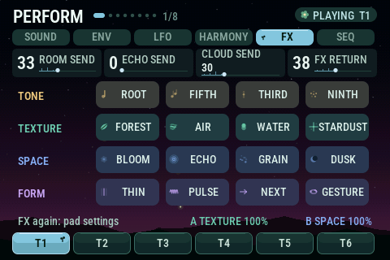
The gesture recorder captures what you do on the texture and space pads (5–12) and plays it back in a loop – so the garden keeps moving the way you moved it while your hands are free for the tone pads, the keys, the encoders or a cup of tea. It records movement, not audio.
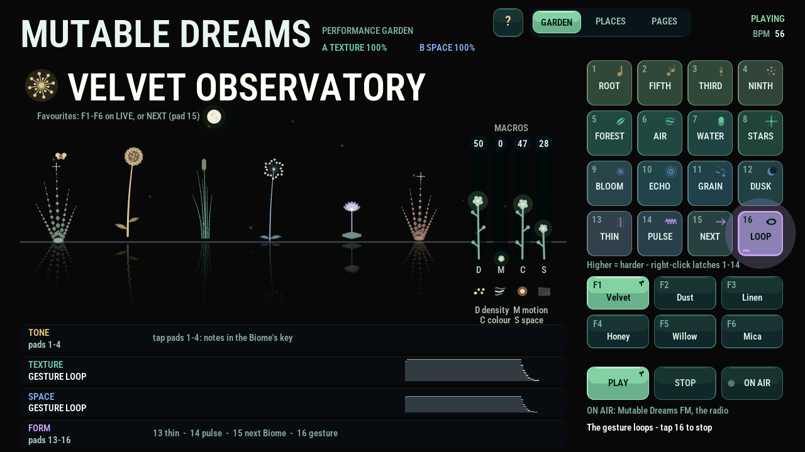
| Length | 4 or 8 bars – E2 on PADS, DAW parameter “Gesture length”. |
| Start | Free or on the next bar – E3 on PADS, “Gesture start”. |
| Playback | SHIFT + E2 on PADS: half speed, normal, double, reverse (LOOP /2, LOOP x2, LOOP REV). |
| Elsewhere | The footswitch, the Dream Console (CAPTURE · LOOP IT · STOP · LAYER) and the plugin's GESTURE card do the same. |
| Saved | A looping gesture is saved with the project and keeps looping after a reload. |
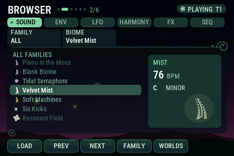
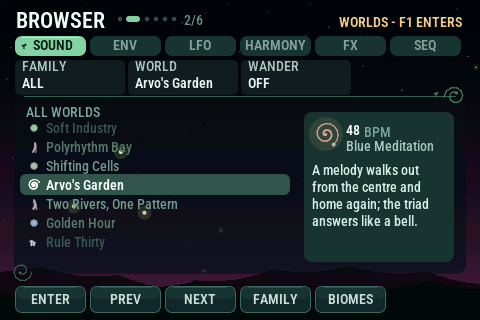
| To … | do this |
|---|---|
| play a favourite | LIVE: F1–F6. Also the stage chips, the Dream Console and the DAW parameter “Biome”. |
| go to the next one | Pad 15 NEXT cycles through the six favourites. |
| hear a new variation | SHIFT + pad 15; SHIFT + RETURN undoes it. |
| find any of the 271 | BROWSER: E1 family, E2 Biome (or F2 PREV / F3 NEXT, F4 next family), F1 LOAD. The Dream Console's library adds search, sorting and SURPRISE ME. |
| store a favourite | BROWSER: SHIFT + F1–F6 puts the Biome on that favourite. Dream Console: ☆. |
| pick one from a DAW | Program Change on MIDI channel 16 (bank select CC 0 for places above 128). In VIBE FM VST 0.8.0 with the anyDAW Studio 0.3.61 plugin host, Program Change worked through AU and did not reach the firmware through VST3; use the DAW parameter “Biome” in that host. |
The 19 families: Mist, Drone, Resonance, Techno, Broken, Organic, Percussion, Melody, Lo-Fi, Bowed, Dub, Hand & Clay, Grain Worlds, Felt & Clay, Silk & Air, Copper, Vowels & Air, Soft Terrains, Quiet Habitats.
A world is a Biome dressed by Kid Bunka: its tempo, the four macros, engine settings (mutes, levels, effects) and the texture / space lanes set – the same 48 worlds as Mutable Dreams on the Trimui Brick and the MPC. On BROWSER press F5 WORLDS: F1 ENTER, F2 / F3 or E2 step, F4 or E1 the family, F5 back to the Biomes. E3 WANDER: after 5, 10 or 20 minutes the next world of the family comes by itself.
The eight world families: Gardens Of Number, Bells And Resonance, Drones And Overtones, Rain And Water, Night Choirs, Endless, Voices And Poems, Machines And Automata.
Each Biome has its own sky, land and sign; each track is a plant of its sound's species (ferns for FM, bells for resonators, mushrooms for drums …). The pads add their own: FOREST gusts, AIR veils, WATER rain, STARDUST sparks, BLOOM light, ECHO rings, GRAIN spores, DUSK the falling dark. The moon crosses the sky with the bars.
The PADS page (press FX twice, or FX on PERFORM) holds the pad settings and six moments – snapshots of how your hands shape the garden.
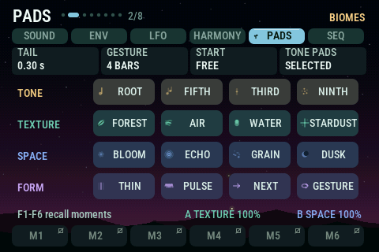
When your hands rest (no pad held, no gesture looping), WANDER gently moves the texture and space pads by itself – an evolving performance without anyone playing. It works on its own, independent of the moments. Switch it with SHIFT + E3 on PADS, the DAW parameter “Wander” or the switch in the Dream Console.
| Encoder | Alone | With SHIFT |
|---|---|---|
| E1 | Pad tail (0.05–6 s) | Tone mode: note, chord, arpeggio |
| E2 | Gesture length: 4 or 8 bars | Gesture playback: half, normal, double, reverse |
| E3 | Gesture start: free or next bar | Wander on / off |
| E4 | Tone pads play: selected track or T1–T6 | Performance as MIDI CC (CC 20–28) |
The VIBE has two audio inputs and CV jacks. Mutable Dreams uses them: the garden puts your sound into its own effects, follows and answers your voice, lets your loudness move the music, and plays along with a modular synthesizer.
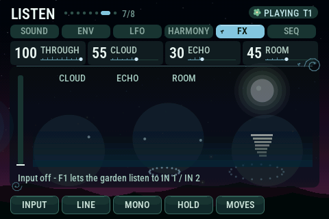
| F1 INPUT | IN 1 / IN 2 on or off. (The Web Player asks once for the microphone.) |
| F2 | LINE, MIC or HI-Z (guitar). |
| F3 | MONO (IN 1) or STEREO (IN 1 + 2). |
| F4 HOLD | Freezes the cloud with your sound inside – play over it. |
| F5 MOVES | Your loudness lifts a macro: DENSITY, MOTION, COLOUR, SPACE or off. |
| E1–E4 | THROUGH (your dry sound), CLOUD, ECHO, ROOM. |
A soft ceiling keeps loud inputs from clipping. REC records what you hear, your dry sound included. When the input is switched off, the dry sound glides out instead of stopping hard.
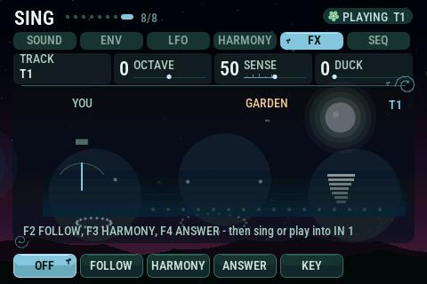
| F1 OFF | The garden stops answering. |
| F2 FOLLOW | The chosen track plays the note you sing, in the Biome's scale. |
| F3 HARMONY | A third or a fifth above you. |
| F4 ANSWER | Sing a phrase and stop: after a beat of silence the garden sings it back, a little changed – every other answer runs backwards. |
| F5 KEY | Sing one note: it becomes the Biome's key. |
| E1–E4 | TRACK that sings, OCTAVE, SENSE (how easily a note is heard), DUCK (the music steps back while you sing). |
The page shows the note you sing with a cents needle, and in ANSWER mode whose turn it is: YOUR CALL while you sing, LISTENING… with a bar filling up during the beat of silence, GARDEN REPLY while it answers. Singing again interrupts the reply. Choosing FOLLOW, HARMONY, ANSWER or KEY switches the input on by itself.
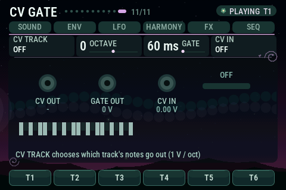
For every page: what it is for, encoders E1–E4, and the soft keys. Where it says “T1–T6”, F1–F6 select the track the page edits.
| Page | E1 · E2 · E3 · E4 | F keys and notes |
|---|---|---|
| LIVE | DENSITY · MOTION · COLOUR · SPACE | F1–F6: favourite Biomes. The garden of the Biome. |
| BROWSER | FAMILY · BIOME (worlds: FAMILY · WORLD · WANDER) | LOAD · PREV · NEXT · FAMILY · WORLDS. SHIFT + F1–F6 stores a favourite. |
| VOICE | TONE PRESET · ENGINE · LEVEL · MUTE | T1–T6. Tone presets dress an engine; “Biome voice” keeps the Biome's own. |
| ENGINE | TONE · HARMONICS · SHAPE (or DECAY) · LEVEL | T1–T6. SHAPE on engines with an envelope, DECAY on percussive ones. |
| MIX | CLOUD SEND · NOTE · PAN · DIVISION | T1–T6. NOTE = the track's base note; DIVISION = its clock (/1 … /8). |
| MIXER | LEVEL · CLOUD · ECHO · ROOM | T1–T6. All six tracks' levels and sends at a glance. |
| Page | E1 · E2 · E3 · E4 | F keys and notes |
|---|---|---|
| ENVELOPE | ATTACK · DECAY · LEVEL · CLOUD SEND | T1–T6. Attack up to 8 s, decay up to 16 s. |
| FILTER | CUTOFF · RESONANCE · TYPE · BREATHE | T1–T6. Types OFF, LP12, LP24, LPG; BREATHE = slow movement of the colour. |
| Page | E1 · E2 · E3 · E4 | F keys and notes |
|---|---|---|
| MODULATION | MARBLES · TIDES · TIDE RATE · WARPS | T1–T6. Marbles = random variation, Tides = the slow LFO (also LFO A), Warps = crossmod colour. |
| LFO A | TARGET · WAVE · DEPTH · RATE | T1–T6. Where Tides moves (filter, colour, pan, grain send, FX sends, warps, soft swell); waves triangle, sine, bloom, sigh. DEPTH / RATE are the same values as TIDES / TIDE RATE. |
| LFO B | TARGET · WAVE · DEPTH · RATE | T1–T6. A second, independent LFO. |
| LINKS | LINK · FROM · TO · MOVES | T1–T6. One track moves another: its cutoff, colour, pan, grain send, FX sends or probability. |
| LINK MOTION | LINK · SIGNAL · DEPTH · RELEASE | T1–T6. The link's signal: hit, envelope, LFO A, LFO B; depth ±; release. |
| DRIFT | DRIFT · POSITION · RATE · DEPTH | T1–T6. DRIFT OFF / HOLD (stay at POSITION) / FLOW (glide by itself; RATE sets how long one glide takes – 0 is about five seconds, 100 several minutes). Needs scenes A and B – otherwise it says CAPTURE SCENES A + B FIRST. |
| DRIFT SCENES | – · – · DEPTH · DRIFT | F1 SCENE A, F2 SCENE B: capture the macros and track settings now (while drift is off). |
| Page | E1 · E2 · E3 · E4 | F keys and notes |
|---|---|---|
| HARMONY | ROOT · SCALE · TRANSPOSE · TEMPO | T1–T6. 13 scales from chromatic to double harmonic major; transpose ±24. |
| PROGRESSION | CHORDS · BARS · FOLLOW · VOICING | T1–T6. Chord patterns (I-IV-I-V, Dusk, Lanterns, Tidal, Still Water …), bars per chord, which tracks follow, voicing. |
| BASSLINE | MODE · MOTIF · GLIDE · NOTE | T1–T6. Bass OFF, EUCLID or STEP; 16 motifs; glide; base note. |
| PHRASE | STEP · SEMITONES · ACCENT · CHANCE | T1–T6. The sixteen bass steps one by one. |
| Page | E1 · E2 · E3 · E4 | F keys and notes |
|---|---|---|
| PERFORM | ROOM SEND · ECHO SEND · CLOUD SEND · FX RETURN | T1–T6. The pads, live. FX again opens PADS. |
| PADS | TAIL · GESTURE · START · TONE PADS (SHIFT: TONE MODE · PLAYBACK · WANDER · MIDI CC OUT) | F1–F6 moments M1–M6; SHIFT + F stores. |
| SPACE | ECHO TIME · FEEDBACK · ROOM TAIL · RETURN | T1–T6. The echo cave. |
| GRAIN | MIX · SIZE · POSITION · FEEDBACK | T1–T6. The granular bus – the spore meadow. |
| CLOUD | AIR · MIX · TRACK SEND · FREEZE | T1–T6. Air in the grains, freeze holds the cloud. |
| TAPE | GRAIN PITCH · DIRECTION · DUCK SOURCE · DUCK | T1–T6. Pitch and direction of the grains, ducking by a track. |
| LISTEN | THROUGH · CLOUD · ECHO · ROOM | INPUT · LINE/MIC/HI-Z · MONO/STEREO · HOLD · MOVES (chapter 9). |
| SING | TRACK · OCTAVE · SENSE · DUCK | OFF · FOLLOW · HARMONY · ANSWER · KEY (chapter 9). |
| Page | E1 · E2 · E3 · E4 | F keys and notes |
|---|---|---|
| RHYTHM | HITS · LENGTH · ROTATE · CHANCE | T1–T6. Euclidean rhythm of the track. |
| GROOVE | SWING · REPEATS · ACCENT · DIVISION | T1–T6. Swing for all; repeats (ratchets) and accent per track. |
| SEQUENCE | SEQUENCE · STEP · NOTE · LENGTH | T1–T6. Switch the step sequence on, edit steps and length. |
| STEP | VELOCITY · GATE · CHANCE · GENERATE | T1–T6. The step's details; generators sparse, arp, pulse, drift, petals, tideline, stars, answers. |
| FLOW | DIRECTION · SHIFT · FEEL · GENERATE | T1–T6. Forward, reverse, pendulum, orbit, seeded. |
| SEQ GRID | TRACK · STEP · NOTE (PAD for the kit) · LENGTH | T1–T6. All six tracks step by step. The letter after a track: S = its own step sequence, G = a generator plays it, K = the kit. |
| SEQ TOOLS | SCOPE · STEP · AMOUNT · SHIFT st (ACTION) | F1 APPLY, F2 UNDO: copy, paste, transpose, reverse, accent, articulate. |
| SEQ RULES | TRACK · STEP · RULE · NOTE | F1 FILL (while playing), F2 UNDO. Rules: always, first cycle, every 2nd, fill only. |
| KIT | KIT · BANK · PAD · HISS | T1–T6. Lo-fi kit on track 4 (tracks 5–6 rest). Banks Dust Room, Paper Machines, Soft Static, Found Objects, Velour Tape. |
| KIT PAD | TUNE · LEVEL · CUTOFF · DECAY | T1–T6. Eight kit sounds: pillow kick, brush snare, dust hat, wood knock, tiny click, tape hiss, crackle, air texture. |
| KIT SEND | PAD · CLOUD · ECHO · ROOM | T1–T6. Effect sends per kit sound. |
| KIT SEQ | STEP · GATE · LENGTH · GENERATE | T1–T6. The kit's steps. |
| Page | E1 · E2 · E3 · E4 | F keys and notes |
|---|---|---|
| RADIO | BROADCAST · PIECES · ITINERA · AT START | ON AIR · SKIP · OFF AIR · ID CHIME (chapter 11). |
| ITINERA | DREAM · LENGTH · PACE · HALL | START (with the transport stopped) · STOP. |
| JOURNEY | JOURNEY · SECTION · BIOME · SECTIONS | T1–T6. OFF, ONCE or LOOP through up to eight sections. |
| JOURNEY TIME | SECTION · BARS · REPEATS · TRANSPOSE | T1–T6. |
| JOURNEY KEEP | SECTION · TRACK · KEEP · JOURNEY | T1–T6. KEEP: whether this track keeps playing its part from the previous section (KEEP) or takes the new section’s Biome (CHANGE). |
| BANKS | SLOT · – · – · REC TAKE | SAVE · LOAD. Sixteen project slots; REC take length 30–120 s. |
| SYSTEM | TEMPO · QUALITY · DUCK RECOVERY · TOUCH | F1 TOUR (FIRST STEPS). ECO / FULL quality; stems status; touch = velocity response. |
| MIDI | CLOCK · SCALE SNAP · CHANNEL · MACRO CC | F1 NOTES OUT (Dream as MIDI) · F2 SONG POS (follow the DAW). CLOCK: internal, USB, TRS or BLE. SCALE SNAP pulls incoming notes into the Biome’s scale. CHANNEL routes the selected track to a MIDI channel. MACRO CC lets CCs move the macros. |
| MIDI LEARN | SLOT · TARGET · TRACK · LEARN | PREV · NEXT · LEARN · CLEAR (chapter 15). |
| MIDI MAP | PORT · CHANNEL · CC · ACTIVE | PREV · NEXT · LEARN · CLEAR. |
| CV GATE | CV TRACK · OCTAVE · GATE · CV IN | F1–F6: the CV track (again: off) (chapter 9). |
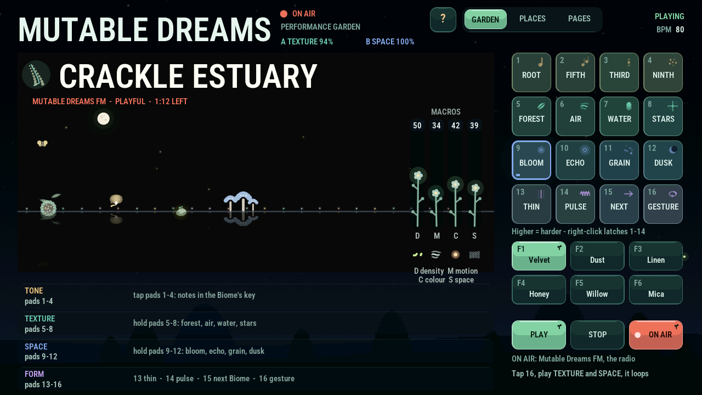
ON AIR turns the instrument into its own station: an endless programme in editions of four pieces, each with its own character, tempo and a new Biome. After six calm minutes at the latest comes a groove; every four hours a 30-minute Itinera dream (if ITINERA is on). An optional station chime – root, fifth and octave – marks the pieces. You can play along on every pad while it runs.
| RADIO keys | F1 ON AIR · F2 SKIP · F3 OFF AIR · F4 ID CHIME. STOP always ends the broadcast. |
| Encoders | Broadcast on/off, piece length (short / radio / long), Itinera dreams on/off, AT START (on air as soon as the instrument starts). |
An Itinera dream is a composed route through many Biomes that evolves on its own for 30 minutes to four hours: Hortus Quietus, Via Siderum, Silva Nocturna, Mare Nebularum, Lumen Primum, Terra Pluvia, Aurora Polaris, Somnus Lenis, Murmur Arenae, Speculum Glaciei, Ignes Errantes, Fungi Lucentes, Terra Resonans, Aer Silens. Choose the dream (E1), its length (E2: 30, 60, 120, 240 min), pace (E3: slow, steady, lively) and hall (E4: close, wide, vast). With the transport stopped, F1 START begins it; F2 STOP ends it. The pads still play.
JOURNEY chains up to eight Biomes as sections. On JOURNEY choose the section (E2) and its Biome (E3) and how many sections are used (E4); E1 runs the journey ONCE or in a LOOP. JOURNEY TIME sets bars, repeats and transposition per section; JOURNEY KEEP decides which tracks carry over from one section into the next – a bassline can stay while the world around it changes.
BANKS has sixteen slots. Choose a slot (E1), F1 SAVE, F2 LOAD. A slot keeps the sound project: the Biome and every setting of the engine’s pages – voices, effects, sequencer, harmony, links, drift, journey. It does not keep the performance layer: pad moments, a looping gesture, latches, favourites, the input (LISTEN / SING / CV) and MIDI settings stay as they are when you load a slot. E4 sets the length of REC takes for this session.
Press REC: what you hear is written as a 44.1 kHz stereo WAV file, 90 s by default (30–120 s on BANKS); REC again ends it earlier. Takes land in the host's media folder under VIBE FM/mutable-dreams-garden/, numbered “dream take 1.wav”, “dream take 2.wav” … In the Web Player choose a folder under Media first. While a take runs, the header shows its time; while it is written, SAVING with a percentage.
MIDI page F1 NOTES OUT (or the DAW parameter “Dream as MIDI”): every note the dream plays goes out as MIDI – tracks on channels 1–6, the kit on channel 10. Record the generative music as MIDI in your DAW and keep or edit it.
SHIFT + E4 on PADS (“MIDI CC out”): the eight texture / space lanes and PULSE go out as CC 20–28 on channel 1, only when they change – for lights, other synths or automation lanes.
Give VIBE FM VST eight outputs: the six tracks come dry on OUT 3–8, one mixer channel each; OUT 1–2 stay the full mix with effects. The SYSTEM page says whether stems are live.
Where the host can show it – the Web Player and the plugin – the stage is the instrument's face, 1280 × 720, over the Biome's night. Three views at the top:
The ? starts or ends FIRST STEPS. Esc or the host's Stage key switches between stage and device.
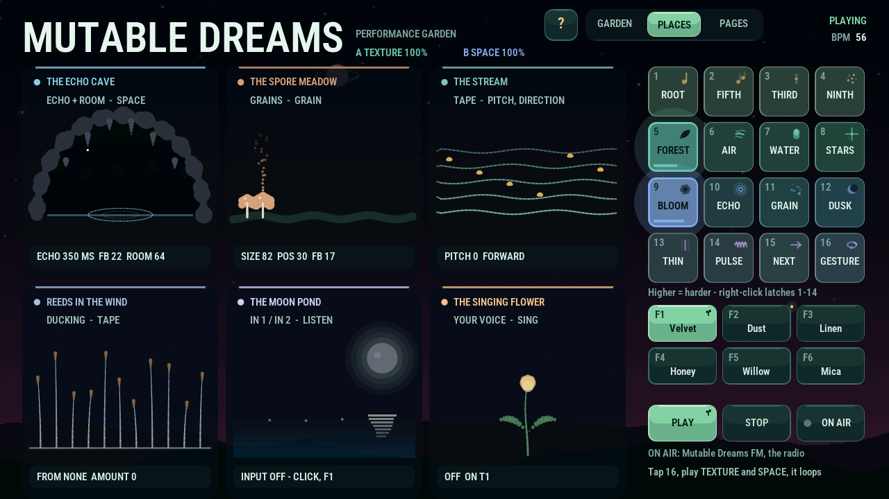
VIBE FM VST: switch the Editor view to CUSTOM. Web Player: View › Editor. The firmware's own page – everything at once, made for a mouse:
STANDARD shows the host's own editor: eight cards in three tabs with XY pads, the gesture curve and buttons.
| Feature | How |
|---|---|
| 30 parameters | Biome (favourite 1–6), tempo, root, scale, the four macros, FX return, texture and space depth, pad tail, gesture length / start / playback, tone pads target and mode, the nine performance lanes (forest, air, water, stardust, bloom, echo, grain, dusk, pulse), CC out, wander, moment, Dream as MIDI. Their ids never change, so automation in old projects keeps working. |
| Automation plays the pads | The nine performance lanes act like invisible hands on pads 5–12 and PULSE; the strongest of hand, gesture and automation wins. |
| Knobs report back | Turning an encoder on the device or a knob in the Console moves the DAW parameter too – record it as automation. |
| Tempo and transport | Follows the DAW's tempo and play / stop. |
| Song position | With SONG POS (MIDI page F2, default on) the sequencer stands where the song stands: start in the middle of a bar or loop a section, and the notes fall on the song's sixteenths. FREE ignores the song position. |
| Notes | The DAW's notes play the selected track (or the track MIDI CHANNEL routes them to). |
| Program Change | Channel 16 picks a Biome by its place in the library; bank select CC 0 reaches all 271. In VIBE FM VST 0.8.0 with the anyDAW Studio 0.3.61 plugin host, Program Change worked through AU and did not reach the firmware through VST3; use the Biome parameter in that host. |
| All notes off | CC 120 / 123 stop notes only; latches, the gesture loop and moments stay. |
| Stems | Eight outputs: six dry tracks on OUT 3–8 (chapter 12). |
| Saved with the project | Everything (chapter 11). |
A learned knob takes over softly: it starts moving the value once it reaches the value's current position, so nothing jumps.
Choose the grid as the VIBE's pads (Web Player: Controllers › “Launchpad as 8 × 8 pads”). Top left: the sixteen pads. Top right: tracks T1–T6, PLAY, STOP, moments M1–M6, variation and REC. The lower half: the 32 steps of the selected track (tap = note on / off).
Other controllers are mapped by the host (VIBE FM's controller profiles) – the firmware itself contains no controller code.
Complete little setups to try. Each starts from PLAY on any Biome unless it says otherwise.
LISTEN F5 MOVES on DENSITY, microphone in the room. Silence thins the music; voices, steps or a kettle make it busier. For an installation or a party in the background.
RADIO: AT START on, piece length RADIO, ITINERA on, ID CHIME on. The instrument broadcasts by itself as soon as it is switched on – for a shop, a waiting room, an exhibition. STOP ends it whenever you want to play yourself.
KIT: KIT on, bank Dust Room, HISS a little. KIT SEQ: GENERATE pulse or stars. Track 4 now plays the kit (5 and 6 rest). Use PULSE (pad 14) on the eighths and GROOVE swing 20 %. THIN removes melody tracks for a drum break.
One player on the pads and the gesture, the other on the stage or the Dream Console with the macros and the library. Or a child on the pads and you on the keys: the tone pads can play another track than the keyboard (PADS E4).
SING FOLLOW shows the note you sing and its cents needle. Pick a Biome in a major or pentatonic scale, sing scales and watch the needle settle; HARMONY lets you hear the third and fifth against your note.
| When … | then … |
|---|---|
| there is no sound | Press PLAY (the button breathes until you do). In the Web Player click Power on; in a DAW start the transport. Check that DENSITY is not at 0 and no track is muted (VOICE E4). |
| I don't know where to start | Click ? on the stage or in the Console, or SYSTEM F1: FIRST STEPS. |
| I only see the garden | Click PAGES on the stage, press MENU on the device, or open the Dream Console. |
| pad 16 shows CAPTURE and nothing happens | It records your moves on pads 5–12, not audio. Play them, then tap 16 again. |
| DRIFT does not move | Capture scene A and B on DRIFT SCENES first (with drift off). Then DRIFT: HOLD or FLOW. |
| tracks 5 and 6 are greyed out | The kit is on: track 4 plays the kit and 5–6 rest. KIT E1 off brings them back. |
| a learned MIDI knob does nothing at first | It takes over softly: move it through the current value. |
| the garden does not hear me | LISTEN F1 INPUT on; the right type on F2 (MIC for a microphone); the meter moves? For SING raise SENSE. In the Web Player allow the microphone. |
| it howls | Feedback: THROUGH and ECHO down, headphones, or the microphone further away. |
| REC says NO PLACE TO WRITE THE TAKE | The host has no media folder: in the Web Player choose one under Media. |
| the radio changed my Biome | That is the programme. F3 OFF AIR or STOP ends it; favourites stay. |
| Itinera does not start | Stop the transport first, then F1 on ITINERA. |
| stems are silent | The host needs more than two outputs; SYSTEM says whether stems are live. |
| something sounds wrong after a variation | SHIFT + RETURN undoes it. |
| FILL does nothing | The fill is queued while playing: press PLAY, then SEQ RULES F1. |
| a key on the display looks grey with a mark | It is assigned but unavailable right now (e.g. a resting track). |
| Engine | Mutable Dreams 2.1 (build 2467CC38): six tracks, 24 sound engines, 271 Biomes in 19 families, 14 Itinera dreams, 8-section journeys, 16 banks. |
| Firmware | One WebAssembly module (about 1.1 MB), built with the VIBE FM SDK; only the WebAssembly extensions VIBE FM allows. |
| Sample rates | 44.1 to 192 kHz; any block size from 1 to 256 frames. The engine runs at 44.1 kHz inside and is resampled. |
| Outputs | Stereo mix; with eight outputs six dry track stems on OUT 3–8. CV and gate out; CV in. |
| Inputs | IN 1 / IN 2 (line, mic, Hi-Z; mono or stereo). |
| Display / stage | 480 × 320 display, 1280 × 720 stage, an editor page of its own. |
| DAW | 30 automatable parameters with stable ids; state saved with the project. |
| Tested | The SDK's checker (format, crashes, NaN, real time, storage, media) and 36 test programs of its own and from independent review, including a fuzzer at 44.1, 48, 96 and 192 kHz. Earlier VST3 / AU checks used VIBE FM VST 0.8.0 in anyDAW Studio 0.3.61: saving requires an audio block after a parameter change; AU state restoration was checked after initialisation. VIBE FM Mk1 hardware, CLAP and stems in a multichannel DAW are still untested. |
Mutable Dreams · Performance Garden is free software under the GNU General Public License 3.0 only. The complete source code is published with each release. The licence texts and notices of every component travel inside the firmware's zip (mutable-dreams-garden.editor/licenses/).
Firmware, sound design, the garden and the worlds by Kid Bunka. The SING pitch follower was written together with Codex; independent reviews and tests by Codex.
Manual for private preview 0.32 · 17 November 2026. Feedback is very welcome.